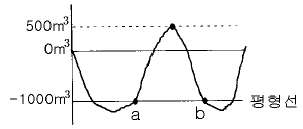
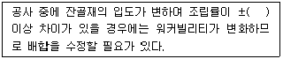
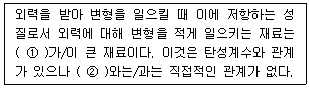
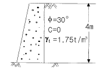
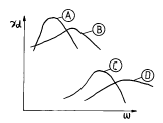
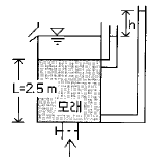
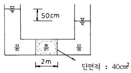

1과목: 콘크리트공학
1. 콘크리트의 시방배합을 현장배합으로 수정할 때 고려할 것은?
2. 단위 골재량의 절대부피가 0.8m3인 콘크리트에서 잔골재율(s/a)이 40%이고, 굵은골재의 비중이 2.65이면, 단위 굵은골재량은 얼마인가?
3. PSC 부재의 프리스트레스 감소원인 중 프리스트레스를 도입한 후 생기는 것은?
4. 굵은골재의 최대치수에 대한 압송관의 최소호칭치수의 설명으로 맞는 것은?
5. 알칼리 골재반응에 대한 설명 중 잘못된 것은?
6. 일반콘크리트의 비비기는 미리 정해둔 비비기 시간의 최소 몇 배 이상 계속해서는 안되는가?
7. 프리스트레스트 콘크리트에 대한 설명 중 잘못된 것은?
8. 콘크리트의 건조수축에 대한 설명으로 옳은 것은?
9. 콘크리트의 중성화에 관한 설명 중 틀린 것은?
10. 포졸란(pozzolan) 반응에 대한 설명 중 틀린 것은?
11. 치수가 20 cm × 40 cm 인 철근콘크리트 부재를 만들 경우 사용 가능한 최대의 굵은골재 최대치수는?
12. 하루 평균기온이 4℃ 인 기상조건하에서 콘크리트를 타설하고자 할 때 틀린 조치사항은?
13. 콘크리트 표준시방서에 의한 콘크리트의 배합설계시 물-시멘트비는 무엇을 고려하여 정하는가?
14. 수화열에 의한 매스콘크리트의 온도균열 저감대책으로 볼 수 없는 것은?
15. 콘크리트용 골재의 저장과 취급에 관한 다음 설명 중 적절하지 않는 것은?
16. 일반 콘크리트 치기에 대한 설명으로 잘못된 것은?
17. KS F 4009(레디믹스트 콘크리트)에 따른 콘크리트 받아들이기 검사에서 강도 시험에 대한 설명 중 틀린 것은?
18. 콘크리트 양생의 영향에 대하여 기술한 다음 설명 중 잘못된 것은?
19. 다음 중 수중콘크리트의 시공방법이 아닌 것은 ?
20. 다음 중 철근부식방지가 주 목적인 보수공법과 거리가 먼것은?
2과목: 건설시공 및 관리
21. 터널공사에서 사용하는 천공(穿孔)방법중 번컷(Burn Cut)공법의 장점에 대한 설명중 옳지 않은 것은?
22. 토질이 양호하고, 부지에 여유가 있고 또 흙막이가 필요할 때는 나무 널말뚝 강널말뚝 등을 사용하는데 이런 경우는 다음의 어느 공법(工法)을 선택하면 가장 좋은가 ?
23. 불도저(Bull - Dozer)의 규격을 나타내는 가장 일반적인 방법은?
24. 중력댐의 시공후 관리상 댐내부에 설치하는 검사랑의 시공 목적과 관계가 가장 먼 것은?
25. 다음의 댐에 관한 기술중 옳지 않은 것은?
26. CPM기법 중 더미(dummy)에 대한 설명으로 적당한 것은 어느 것인가?
27. 자연 함수비 8%인 흙으로 성토하고자 한다. 시방서에는 다짐한 흙의 함수비를 15%로 관리하도록 규정하였을때 매층마다 1m2당 몇kg의 물을 살수해야 하는가? (단, 1층의 다짐 후 두께는 20㎝이고,토량 변화율 C = 0.9이며 원지반상태에서 흙의 단위중량은 1.8t/m3이며, 소수점이하 3째자리에서 반올림하여 2째자리까지 구하시오.)
28. 흙막이공에서 어스 앵커 또는 내부 브레이스에 의한 버팀시스템이 사용될 때 연속 수평부재로 쓰이는 버팀 형식은?
29. 셔블계 굴삭기 가운데 수중작업에 많이 쓰이며, 협소한 장소의 깊은굴착에 가장 적합한 건설기계는?
30. 폭우시 옹벽배면에는 침투수압이 발생되는데 이 침투수에 의한 중요한 영향중 옳지 않은 것은?
31. 0.7m3의 백호우(Back Hoe) 1대를 사용하여 6000m3의 기초 굴착을 시행할 때 굴착에 요하는 일수는 얼마인가? (단, Back Hoe의 cycle time은 24초, dipper 계수는 0.9, 토량 변화율(L)은 1.2, 작업능률은 0.8, 1일의 운전시간은 7시간이다.)
32. 요즘 지하층을 구축하면서 동시에 지상층도 시공이 가능한 역타공법(Top-down공법)이 현장에서 많이 사용된다. 역타공법의 특징 중 틀린 것은?
33. 3점 견적법에 따른 적정공사일수는? (단, 낙관일수=5일, 정상일수=7일, 비관일수=15일)
34. 토공기계에 대한 트레피커빌리티(trafficability)를 판단하는데 가장 흔히 사용되는 시험은?
35. 피어(Pier)기초란 구조물의 하중을 충분한 지지력을 얻을 수 있는 지반에 전달하기 위하여 수직공을 굴착하여 그 속에 현장 콘크리트를 타설하여 만들어진 주상(柱狀)의 기초를 의미한다. 다음중 피어기초의 특징이 아닌 것은?
36. 베인시험(Vane test)은 다음 중 주로 어떤 지반의 전단저항을 직접 측정하는 시험인가?
37. 아스팔트 콘크리트 기층의 다짐과 관계가 없는 장비는?
38. 콘크리트 구조물에서 수축 줄눈을 가장 올바르게 설명한 것은?
39. TBM(Tunnel Boring Machine)공법을 이용하여 암석을 굴착하여 터널단면을 만들려고 한다. TBM 공법의 단점이 아닌것은?
40. 그림의 토적곡선의 a-b 구간에서 발생한 절토량을 인접한500(m2) 면적지역에 다짐상태로 성토시 성토높이를 구하면 약 몇 m 인가? (단, L=1.2, C=0.9)

3과목: 건설재료 및 시험
41. 콘크리트용 혼화재료에 관한 설명 중 틀린 것은?
42. 아스팔트 혼합물의 겉보기 밀도가 2.28 이고 아스팔트의 양이 5%, 골재의 평균비중이 2.56일 때 공극률은 약 얼마인가? (단, 아스팔트 비중은 1임)
43. 강의 열처리 방법에는 풀림(thens), 불림(소준), 담금질(소입), 뜨임(소려) 등이 있다. 이 중에서 결정을 미세화 하고 균일하게 조정하기 위해 적당한 온도로 가열한 후 대기 중에서 냉각시키는 열처리 방법은?
44. 다음 중 석재의 성질 중 잘못된 것은?
45. 콘크리트 배합에 관한 아래 표의 ( )에 들어갈 알맞은 수치는?

46. 대폭파 또는 수중폭파에서 동시폭파를 실시하기 위하여 뇌관 대신에 사용하는 것은?
47. 다음 중 천연아스팔트의 종류가 아닌 것은?
48. 플라스틱의 성질에 대한 설명으로 틀린 것은?
49. 시멘트 분말도가 큰 경우의 특징으로 맞지 않은 것은?
50. 굵은골재의 노건조상태의 무게가 2,000g 이었고, 표면건조 포화상태의 무게가 2,090g, 수중에서의 무게가 1,290g 이었다면 표면건조포화상태의 비중은?
51. 건설공사 품질시험기준에서 콘크리트공사의 골재시험 빈도가 골재원마다, 1,000세제곱미터 마다 행하는 시험종목이 아닌 것은?
52. 아스팔트의 인화점 및 연소점 시험에 대한 설명으로 잘못된 것은?
53. 다음 괄호 안에 들어갈 말로 맞게 연결된 것은?

54. 다음 설명이 올바르게 되어 있는 것은?
55. 콘크리트의 응결, 경화 조절의 목적으로 사용되는 혼화제에 대한 설명 중 틀린 것은?
56. 목재를 조성하고 있는 물질중에서 목질부에 가장 많은 양을 차지하고 있는 것은?
57. 상온에서 액체이며 동해를 입기에 가장 쉬운 폭약은?
58. 모래 A의 조립율이 3.43 이고, 모래 B의 조립율이 2.36인 모래를 혼합하여 조립율 2.80의 모래 C를 만들려면 모래A와 B는 얼마를 섞어야 하는가? (단, A : B 의 중량비)
59. 토목공사의 건설공사 품질시험기준에서 노체의 현장밀도 시험은 층다짐시 2차선기준으로 층별 몇m 마다 시행 하는가?
60. 시멘트 저장에 있어서 유의해야 할 사항 중 잘못 설명된 것은?
4과목: 토질 및 기초
61. 토목 섬유의 주요기능 중 옳지 않은 것은?
62. 내부마찰각이 30° , 단위중량이 1.9t/m3인 흙의 인장균열 깊이가 3m일 때 점착력은?
63. 그림과 같은 옹벽배면에 작용하는 토압의 크기를 Rankine의 토압공식으로 구하면?

64. 단면적 20㎝2, 길이 10㎝의 시료를 15㎝의 수두차로 정수 위 투수시험을 한 결과 2분 동안에 150㎝3의 물이 유출되었다. 이 흙의 Gs = 2.67이고, 건조중량이 420g 이었다. 공극을 통하여 침투하는 실제 침투유속 Vs는?
65. 압밀시험에 사용된 시료의 교란으로 인한 영향을 나타낸 것으로 옳은 것은?
66. Jaky의 정지토압계수를 구하는 공식 Ko=1-sinø 가 가장 잘 성립하는 토질은?
67. 흙의 종류에 따른 아래 그림과 같은 다짐곡선들 중 옳은 것은?

68. 흙의 입도분포에서 균등계수가 가장 큰 흙은?
69. 완전히 포화된 흙의 함수비가 48%이었다. 이때 흙의 습윤 단위 중량이 1.91t/m3이었다. 이 흙의 비중은 얼마인가?
70. 현장흙의 단위무게 시험 중 모래치환법에서 모래는 무엇을 구하려고 이용하는가?
71. 주동토압을 PA, 수동토압을 PP, 정지토압을 P0라 할 때 토압의 크기 순서는?
72. 토질조사에서 사운딩(Sounding)에 관한 설명 중 옳은 것은?
73. 점토층의 두께 5m, 간극비 1.4, 액성한계 50%이고 점토층 위의 유효상재 압력이 10t/m2에서 14t/m2으로 증가할때의 침하량은? (단, 압축지수는 흐트러지지 않은 시료에 대한 Terzaghi & Peck의 경험식을 사용하여 구한다.)
74. 그림과 같이 물이 위로 침투하는 수조에서 분사현상이 발생하기 위한 수두(h)는 최소 얼마를 초과하여야 하는가? (단, 수조 속에 있는 모래의 비중은 2.60, 간극비는 0.60, 모래층의 두께는 2.5m이다.)

75. 점착력이 전혀없는 순수 모래에 대하여 직접 전단시험을 하였더니 수직응력이 4.94㎏/㎝2일때 2.85㎏/㎝2의 전단저항을 얻었다. 이 모래의 내부마찰각은?
76. 크기가 1.5m×1.5m 인 직접기초가 있다. 근입깊이가 1.0m일 때, 기초가 받을 수 있는 최대허용하중을 Terzaghi 방법에 의하여 구하면? (단, 기초지반의 점착력은 1.5t/m2, 단위중량은 1.8t/m3, 마찰각은 20° 이고 이 때의 지지력 계수는 Nc=17.69, Nq=7.44, Nr=3.64 이며, 허용지 지력에 대한 안전율은 4.0으로 한다.)
77. 다음의 연약지반 개량공법중에서 점성토지반에 이용되는 공법은?
78. 그림에서 흙의 단면적이 40㎝2이고 투수계수가 0.1㎝/sec일 때 흙속을 통과하는 유량은?

79. Sand drain에 대한 Paper drain 공법의 장점 설명 중 옳지 않은 것은?
80. 표준관입시험에 관한 설명 중 틀린 것은?